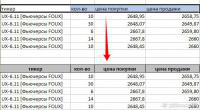

|
 Очень часто мне присылают для обработки файлы, в которых заголовки таблиц никак не отформатированы, что затрудняет работу с такими таблицами. Поскольку выполнять вручную каждый раз одни и те же действия надоедает, бы написан этот простенький макрос. Что он делает: (действия выполняются с выделенным диапазоном ячеек)
Sub ФорматированиеВыделенногоЗаголовка() On Error Resume Next Dim ra As Range: Set ra = Selection With ra .Font.Bold = True .HorizontalAlignment = xlCenter .VerticalAlignment = xlCenter .WrapText = True .Interior.ColorIndex = 15 With .Borders .LineStyle = xlContinuous .Weight = xlThin End With End With Set ra = Intersect(ra.Cells(ra.Cells.Count).Offset(1).EntireRow, ra.Cells(1).EntireColumn) ra.Select: ActiveWindow.FreezePanes = True End Sub
|